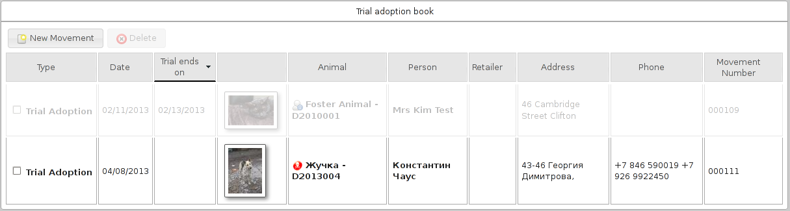

6 Movement Books
ASM has a set of movement books that can be used for conveniently viewing animals who are currently off the shelter or reserved.

They are:
-
Reservation book
-
Foster book
-
Retailer book
-
Trial adoption book
-
Return an animal from adoption (shows adoptions in the last 30 days)
-
Return a transferred animal (shows transfers in the last 30 days)
-
Return an animal from another movement (escaped, stolen, released, reclaimed animals in the last 30 days).
Conceptually, all the books work in exactly the same way – they show sets of animal movements off the shelter for different reasons. You can quickly link to the animal or people records or return the animal from the movement back to the shelter. To do that, simply open the movement and set a return date.
